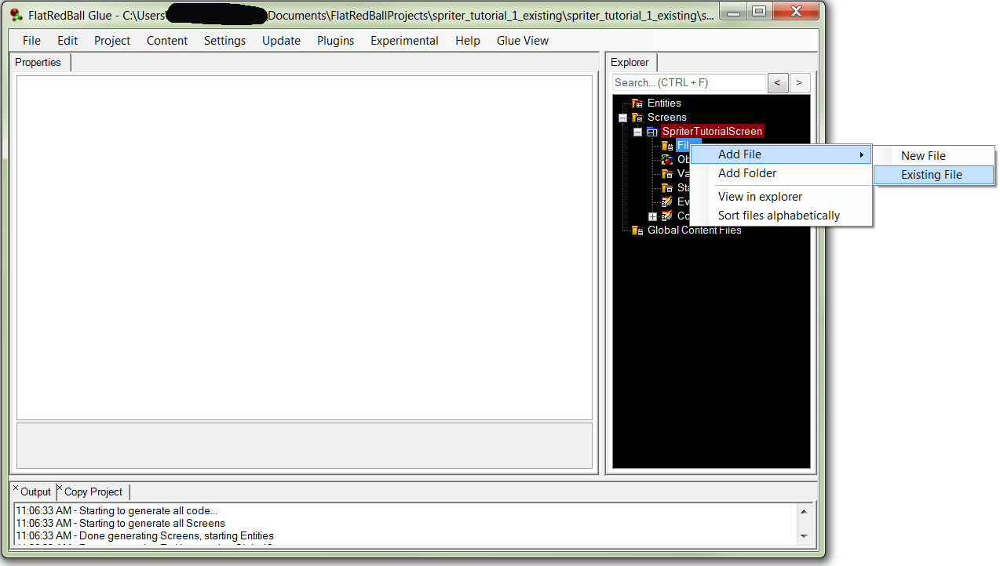
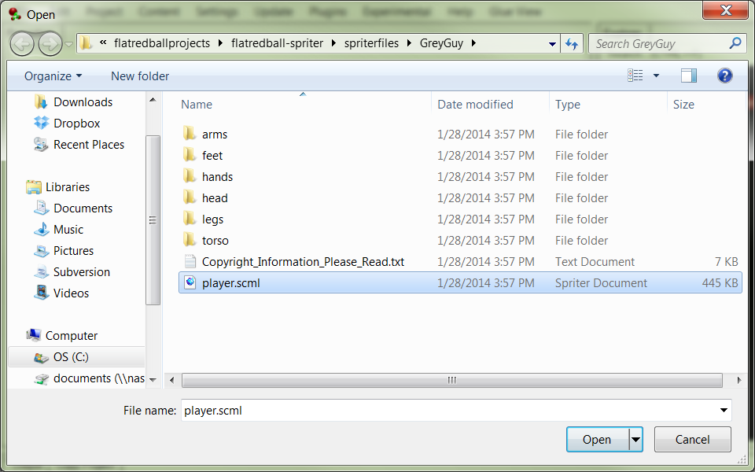
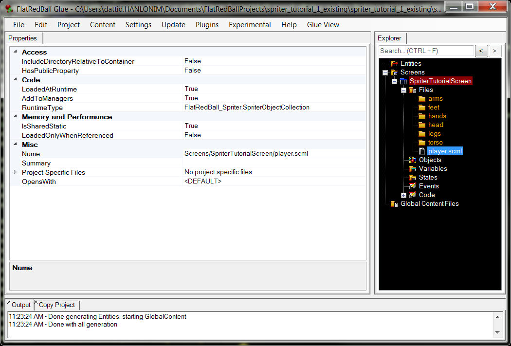

I'm assuming you already have this plugin loaded.
Here is an example provided by BrashMonkey.
Unzip that into any directory (outside of the project), and now you are ready to get started!
In Glue, choose an existing screen or add a screen by right clicking on "Screens" and selecting "Add Screen"
Right click on Files, and choose add file, existing file:
Navigate to where you unzipped GreyGuy.zip, and find the file called player.scml:
You should see the following in the files area:
This copied the scml and all referenced folders & images into the glue project. The old location is not connected to the project at all, so you can delete the unzipped GreyGuy folder if you want.
PRO TIP: From here, you can double click player.scml to open the animations in Spriter.
The file is now loaded and will load in game, but the animation will not play without adding a line of code to the screen's CustomInitialize function
Open up the project in Visual Studio (Click Project, View in Visual Studio), and add the following line to your Screen's CustomInitialize function:
{% highlight C# %} player.StartAnimation(); {% endhighlight %}This loads and starts the first animation in the file, which happens to be the looping idle animation.
Hit F5 to run the game, and you should see the GreyGuy idle animation play!
That's all there is to loading existing animation files into screens.
You can change the line in CustomInitialize to include an animation name too:
{% highlight C# %} player.StartAnimation("walk"); {% endhighlight %}NOTE: This method of loading Spriter files generates a SpriterObjectCollection object in your code. While it does work in this case, it only makes sense because the example file has one Spriter entity. If the example had multiple Spriter entities in the SCML file, you would see animations overlapping.
The plugin allows for loading single Spriter entities out of a single Spriter file, which I will cover in a later tutorial.
Happy Animating!